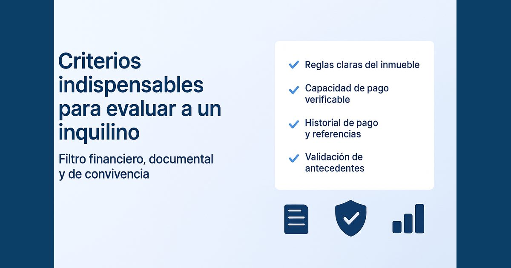

Cómo evaluar a un inquilino antes de firmar: criterios y documentos

En resumen
Evaluar a un inquilino es comprobar cuatro cosas. Que acepta tus reglas, que puede pagar la renta, que ha pagado bien antes y que sus documentos son reales. Usa los mismos criterios con todos y deja por escrito por qué decides.
¿Por qué conviene evaluar antes de firmar?
Porque corregir una mala elección casi siempre cuesta más que filtrar bien. Incluso con un buen contrato, un inquilino que no paga puede significar meses de cobranza y un proceso de desalojo.
¿Qué reglas debes definir primero?
Antes de publicar, escribe tus condiciones. Plazo, garantía, mascotas, número de ocupantes, reglamento del edificio y uso solo como vivienda. Compártelas desde el primer contacto y ahorrarás visitas con quien no las va a aceptar.
¿Qué documentos debes pedir?
- Identidad. DNI o carné de extranjería.
- Si es dependiente. Sus últimas boletas de pago y, si hace falta, una constancia de trabajo.
- Si es independiente. Recibos por honorarios y estados de cuenta de varios meses.
- Referencias. Los datos de su arrendador anterior.
No basta con recibirlos. Comprueba que los datos coincidan entre sí y llama a las referencias.
¿Cómo sabes si puede pagar la renta?
Como regla de mercado, la renta no debería superar alrededor de un tercio de su ingreso bruto verificable. Considera también sus deudas, porque dos personas con el mismo sueldo pueden tener capacidades de pago muy distintas.
Si la renta es de S/ 2,000, busca un ingreso sustentable cercano a S/ 6,000 al mes.
Si sus ingresos varían o el resultado queda justo, puedes solicitar un garante solidario o un coarrendatario. Déjalo escrito en el contrato.
¿Cómo revisas su historial?
Mira la tendencia y no un solo dato. Un atraso puntual puede tener explicación, pero los atrasos frecuentes o las deudas que no calzan con sus ingresos elevan el riesgo. Pregúntale también a su arrendador anterior cómo pagaba y cómo entregó el depa.
Pídele autorización para consultar su reporte crediticio o que te lo entregue él mismo. Son datos personales, protegidos por la Ley 29733, así que úsalos solo para evaluarlo.
¿Prefieres que expertos se encarguen del contrato, el inquilino y la cobranza? Conoce Proper Rentas.
Conocer Proper Rentas¿Qué señales deben ponerte en alerta?
- Te presiona para firmar sin entregar documentos.
- Ofrece pagar varios meses por adelantado para evitar la evaluación.
- Sus documentos tienen datos que no coinciden.
- No puede darte una referencia de su alquiler anterior.
- Quiere que el contrato vaya a nombre de otra persona.
¿Cómo tomas la decisión final?
Usa la misma hoja para todos los postulantes y decide por criterios de pago y de uso del depa, nunca por motivos personales como su origen o su religión.
Antes de aprobar, confirma lo siguiente.
- Aceptó por escrito tus condiciones y el reglamento del edificio.
- Su identidad y sus ingresos están verificados.
- La renta está dentro de su capacidad de pago.
- Su historial y sus referencias no muestran un patrón de atrasos.
- Definiste si hace falta un garante o coarrendatario.
Si todo está en orden, sigue con el contrato. Te lo contamos en cómo alquilar un departamento paso a paso y en nuestro checklist legal.
Preguntas frecuentes
¿Qué porcentaje de sus ingresos debería pagar un inquilino de renta?
Como regla de mercado, la renta no debería superar alrededor de un tercio del ingreso bruto que el postulante pueda sustentar. Es una referencia, no una fórmula exacta.
¿Puedo revisar el historial crediticio de un postulante?
Pídele que te autorice o que te entregue él mismo su reporte. Se trata de datos personales, así que guárdalos solo para evaluar su postulación.
¿Qué hago si el postulante es independiente?
Pide recibos por honorarios y estados de cuenta de varios meses. Si sus ingresos varían mucho, puedes solicitar un garante solidario o un coarrendatario.
¿Un mal dato en su historial debe descartarlo?
No siempre. Un atraso puntual puede tener explicación. Lo que eleva el riesgo es un patrón de atrasos o deudas que no calzan con sus ingresos.